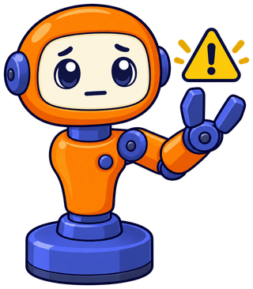

Anatomy of a Robot Arm¶
Summary¶
This chapter introduces the vocabulary of robot arms: links, joints, degrees of freedom, end effectors, workspace, payload, and repeatability. It also introduces leader and follower arms and the open-source desktop arms used in this book. After this chapter, you will be able to describe an arm and compare arms using standard terms.
Concepts Covered¶
This chapter covers the following 31 concepts from the learning graph:
| Concept | Concept Impact Score |
|---|---|
| Robot Arm | 4204 |
| Joint | 1355 |
| Open-Source Hardware | 447 |
| Desktop Robot Arm | 431 |
| Revolute Joint | 421 |
| Joint Angle | 415 |
| End Effector | 258 |
| Link | 242 |
| Pose | 214 |
| Joint Limits | 190 |
| Follower Arm | 129 |
| Leader Arm | 118 |
| Teleoperation | 114 |
| Base Frame | 107 |
| Gripper | 43 |
| Degrees of Freedom | 31 |
| Workspace | 19 |
| Repeatability | 14 |
| Payload | 12 |
| Home Position | 9 |
| Serial Manipulator | 7 |
| Six-Axis Arm | 6 |
| Parallel Gripper | 2 |
| Reach | 2 |
| Elbow | 2 |
| Wrist | 2 |
| Bimanual Robot | 2 |
| Robot Arm Applications | 2 |
| Prismatic Joint | 1 |
| Accuracy | 1 |
| Shoulder | 1 |
Prerequisites¶
This chapter assumes only the prerequisites listed in the course description.
Meet My Parts!
You are about to learn the name of every part of my body, and why each one matters when you write code. By the end you will be able to describe any robot arm in a few precise words, and to describe me in Python. Let's move it!
Chapter 1 gave you a clean place to write robot code. This chapter gives you the words to talk about the robot. Those words are not decoration. A spec sheet that says "6 DOF, 1.5 kg payload, 0.2 mm repeatability" is only useful if you know what each phrase promises and what it leaves out. A program that moves "the elbow to 40 degrees" only makes sense if you know where the elbow is and which way 40 degrees turns.
You will meet a lot of terms. Each one is defined before it is used, and each one connects to a part of the two arms in this book, the SO-ARM101 and the reBot-DevArm B601. Nothing in this chapter needs hardware. You will use Python only at the end, in a short lab, to describe an arm as data.
What Is a Robot Arm?¶
A robot arm is a programmable machine made of rigid pieces connected by motorized joints, built to move a tool to a chosen place. The word "programmable" matters. A crane moves a hook when a person works its levers. A robot arm moves its tool when a program tells its motors where to go, which is why a Python script can drive one.
The easiest way to learn the parts is to compare the arm to your own. Hold your right arm out in front of you and notice that it bends in a few specific places. A robot arm uses the same layout, with a motor at each bend.
| Your arm | Robot arm part | What it does | SO-ARM101 joint name |
|---|---|---|---|
| Torso (stays put) | Base | Holds everything and stays fixed to the table | none (fixed) |
| Shoulder, swinging sideways | Shoulder pan | Turns the whole arm left and right | shoulder_pan |
| Shoulder, raising the arm | Shoulder lift | Raises and lowers the arm | shoulder_lift |
| Elbow | Elbow | Bends the arm in the middle | elbow_flex |
| Wrist, nodding the hand | Wrist flex | Tilts the hand up and down | wrist_flex |
| Wrist, twisting the palm | Wrist roll | Twists the hand around its own axis | wrist_roll |
| Hand and fingers | Gripper | Grasps objects | gripper |
Those six names are the ones used by LeRobot, the library that drives the SO-ARM101, and they are the same names you used in the config/arm.json file in Chapter 1. Your human shoulder is more flexible than the robot's. It can swing, raise, and also rotate the upper arm, which is three kinds of motion, while the robot's shoulder has two. Real arms always trade some flexibility for a simpler machine.
A robot arm is also a serial manipulator. That phrase means its joints are connected one after another in a single chain, from the base to the tool, like links in a necklace. The opposite design is a parallel manipulator, in which several chains hold the tool at the same time, as in the delta robots that sort items on factory conveyor belts. A serial chain has two consequences you will use again and again.
- Motion adds up. Each joint moves everything beyond it. Turn the shoulder, and the elbow, wrist, and gripper all swing along.
- Weight adds up too. The joint nearest the base has to carry the whole arm plus whatever the gripper holds. The joint nearest the tool carries only a small part of the weight.
An Arm Is a Chain
Picture a chain of joints in which every joint moves all the joints after it. That one picture answers two big questions: where the hand ends up (add up the motion down the chain) and which motor works hardest (the one at the start).
Joints and Links¶
Every serial arm is built from only two kinds of piece, and learning them is the key to the whole subject.
A joint is a connection between two pieces that lets one move relative to the other. A link is a rigid piece between two joints that does not bend. A robot arm is an alternating chain: base, joint, link, joint, link, and so on out to the tool. If you remember only one idea from this chapter, remember that joints move and links do not.
Joints come in two main kinds, and the difference is the kind of motion.
A revolute joint rotates around a fixed line, called its axis, like a door on a hinge. Its motion is measured as an angle, in degrees or radians. Every joint in the SO-ARM101 and in the reBot-DevArm's arm is revolute: each is driven by a motor that turns a shaft.
A prismatic joint slides along a straight line, like a drawer on its rails. Its motion is measured as a distance, in millimeters or meters. You already know machines made of prismatic joints. A 3D printer moves its nozzle with three sliding axes, X, Y, and Z, so a printer is a robot of three prismatic joints. You will use one in Chapter 7.
| Revolute joint | Prismatic joint | |
|---|---|---|
| Motion | Rotates around an axis | Slides along a line |
| Measured as | An angle (degrees or radians) | A distance (millimeters or meters) |
| Everyday example | A door hinge | A drawer on rails |
| In this book | All six joints of the SO-ARM101, and the arm joints of the reBot-DevArm | The fingers of a parallel gripper move in this way |
Look at the last cell of that table. The reBot-DevArm's gripper has fingers that slide, so its motion is prismatic, even though a motor that turns drives it. A mechanism can change one kind of motion into another, so the kind of joint is about the motion you get at the output, not the motor behind it.
Never Force a Powered Joint

When an arm is powered, its motors hold each joint in place, and twisting a joint by hand fights the gears and can damage them. The only arm you should move by hand is a leader arm, which is built for that, or any arm whose motors are switched off. If a joint feels stuck, stop, power down, and look for what is blocking it.Links matter because their lengths decide where the tool can go. A short link tends to give a small, stiff arm, and a long link gives a larger arm that flexes more. In the SO-ARM101 the links are the 3D-printed parts. The files you will print in Chapter 7 include Upper_arm_SO101.stl, the link between the shoulder and the elbow, and Under_arm_SO101.stl, the link between the elbow and the wrist. The Base_SO101.stl part clamps to the table and holds the first motor, so it is the fixed base that every other part moves relative to.
Here is a worked example that shows why link lengths matter. Imagine a flat arm with one shoulder joint, an upper arm 10 cm long, an elbow joint, and a forearm 15 cm long. These lengths are illustrative. With the arm stretched straight out, the tip is 10 + 15 = 25 cm from the shoulder. With the elbow bent all the way back so the forearm folds along the upper arm, the tip is 15 − 10 = 5 cm from the shoulder. Every point the tip can reach is between 5 cm and 25 cm away. You will build on this exact example in the workspace section.
Naming the Parts¶
You now know that an arm is a chain of joints and links. Engineers use specific names for the positions along that chain, and you will see them in every data sheet and library.
- The shoulder is the joint group at the base end of the arm. In the SO-ARM101 it has two motors,
shoulder_panto turn left and right, andshoulder_liftto raise and lower. - The elbow is the joint in the middle, between the upper arm and the forearm. It bends the arm.
- The wrist is the joint group at the tool end of the arm. It tilts and twists the hand, and it is the reason a gripper can approach an object from a chosen angle.
- The end effector is the tool at the very end of the chain, the part that actually touches the world. It might be a gripper, a suction cup, a pen holder, or a camera. It is called an effector because it is where the robot has its effect.
Name Parts from the Base Outward
When you meet a new arm, point at its parts in order from the table to the tool: base, shoulder, upper arm, elbow, forearm, wrist, end effector. Doing this takes ten seconds, and it tells you where each motor sits and which joints are the first ones that matter in your code.
The most common end effector is the gripper, a hand with two fingers or jaws that closes on an object. Grippers differ in how the jaws move. The SO-ARM101 follower has a gripper with one fixed jaw and one moving jaw that swings shut against it. The printed file Moving_Jaw_SO101.stl is that moving part, and the fixed half is formed by the wrist-roll part. The reBot-DevArm uses a parallel gripper, in which both fingers stay parallel and slide toward each other. A parallel gripper centers the object between its fingers whatever the object's size, while a moving-jaw gripper pushes the object toward the fixed jaw. According to its published specification, the reBot gripper opens from 0 to 100 mm.
| Gripper type | How the jaws move | Strength | In this book |
|---|---|---|---|
| Moving-jaw | One jaw is fixed and one swings shut | Simple, few parts, easy to print | SO-ARM101 follower |
| Parallel | Two fingers slide toward each other | Centers any object it holds | reBot-DevArm B601 |
In the next MicroSim, you meet a schematic six-axis arm and practice naming its seven parts: base, shoulder, upper arm, elbow, forearm, wrist, and end effector. Explore first, and then take the quiz. The quiz asks you to click each part when given its name.
Diagram: Robot Arm Part Identifier¶
Run the Robot Arm Part Identifier MicroSim fullscreen
Robot Arm Part Identifier
Type: microsim
sim-id: robot-arm-part-identifier
Library: p5.js
Status: Specified
Bloom Level: Remember
Bloom Verb: identify
Learning Objective: The learner will identify the seven named parts of a robot arm on a schematic, given each part's name, with at least 6 of 7 correct on the first attempt.
Prerequisites: robot arm, joint, link, base, shoulder, elbow, wrist, end effector (all defined in the sections above this block).
Evidence of Mastery: In quiz mode the sim shows one part name and the learner clicks the part of the schematic they believe it names. A click is correct when it lands on the part named, as defined in the part table in Content. Mastery is 6 of 7 correct on the first attempt. Clicking parts in explore mode is exploration, not evidence.
Misconceptions: (1) The shoulder is the long piece between the base and the elbow. (The shoulder is a joint, and the long piece is the upper arm, a link.) (2) The wrist is the hand. (The wrist is the joint group that moves the hand; the hand is the end effector.) (3) The base is a joint. (The base is the fixed part that holds the first joint.)
Instructional Rationale: A Remember-level identify objective is met by retrieving a name and matching it to a thing. Explore mode builds the association by showing each name with its definition, and quiz mode tests retrieval by giving the name and requiring a location, which is the reverse direction of reading a label.
Content:
A side-view schematic of a serial arm drawn as a chain from the table up and out, with seven selectable regions in this order from the table to the tool. Each region reveals its description in explore mode.
| # | Part | Kind | Description revealed in explore mode (also shown as feedback) |
|---|---|---|---|
| 1 | Base | Fixed part | The fixed part that clamps to the table and holds the first motor. Every other part moves relative to it. |
| 2 | Shoulder | Joint group | The joints at the base end of the arm. They turn the whole arm left and right and raise and lower it. |
| 3 | Upper arm | Link | The rigid link between the shoulder and the elbow. |
| 4 | Elbow | Joint | The joint in the middle of the arm that bends the upper arm toward the forearm. |
| 5 | Forearm | Link | The rigid link between the elbow and the wrist. |
| 6 | Wrist | Joint group | The joints at the tool end of the arm. They tilt and twist the hand. |
| 7 | End effector | Tool | The tool at the end of the chain. A gripper is the most common one. It is the part that touches the world. |
In quiz mode the seven part names are asked in this fixed order: Elbow, Base, Wrist, Upper arm, End effector, Shoulder, Forearm.
Provenance: The part names and descriptions come from the chapter sections "Joints and Links" and "Naming the Parts". The schematic is an illustration drawn by the sim, not a photograph of either arm, and the sim labels it "schematic".
Rules: There are no adjustable quantities. A click is correct if it falls inside the region of the part being asked about, and wrong if it falls inside any other region. A click on empty space does not count as an answer and the learner may click again. Each of the seven names is asked once.
Learner Activity:
- In explore mode the learner clicks each of the seven regions and reads its description. The learner switches to quiz mode when ready.
- In quiz mode the sim shows a part name. The learner clicks the part of the schematic that has that name.
- The sim says whether the click was correct, highlights the correct part, and shows its description.
- After the seventh name the sim shows the score and the seven parts with their kinds (joint, link, fixed part, tool).
Feedback: Seven names, fixed order, one attempt each. Correct: "Correct:
Starting State: The schematic is shown in explore mode with no region selected and the prompt "Click a part to learn its name and job."
Chapter Anchors: The chapter names seven parts of an arm (base, shoulder, upper arm, elbow, forearm, wrist, end effector). The upper arm and forearm are links, and the shoulder, elbow, and wrist are joints or joint groups. Mastery is 6 of 7.
Angles, Poses, and Limits¶
You can now name the parts. The next step is to describe where they are. Robot code does this with numbers, and three ideas organize those numbers: the joint angle, the pose, and the joint limit.
Joint Angle¶
A joint angle is how far a revolute joint has turned, measured from a zero position. The zero position is a reference that the arm's maker or your calibration sets, such as "the elbow straight" or "the forearm pointing forward." Angles are written in degrees (a full turn is 360) or in radians (a full turn is \( 2\pi \), about 6.2832). Python's math functions use radians, but people think in degrees. The conversion is math.radians(degrees).
Servos have a third unit. The STS3215 servos in the SO-ARM101 report position in ticks, whole numbers where 4096 ticks make one full turn, as Chapter 1 used in degrees_to_ticks. So the same joint angle can be written in three ways. Here is a worked example for a joint turned 30 degrees. The f-string {angle_rad=:.4f} prints the name and the value with four digits after the decimal point.
Thirty degrees is one-twelfth of a turn, and one-twelfth of 4096 is 341.33, which rounds to 341 ticks. The table lists the angles you will see most often.
| Degrees | Radians | Ticks (4096 per turn) | What it is |
|---|---|---|---|
| 0 | 0.0000 | 0 | The zero position |
| 30 | 0.5236 | 341 | One-twelfth of a turn |
| 45 | 0.7854 | 512 | One-eighth of a turn |
| 90 | 1.5708 | 1024 | A quarter turn |
| 180 | 3.1416 | 2048 | A half turn |
| 360 | 6.2832 | 4096 | One full turn |
Two arms can use the same numbers to mean different things, because each maker picks its own zero and its own positive direction. Here is why that matters. Suppose the leader arm of a pair counts a bend toward the front as positive, and the follower counts the same bend as negative. You bend the leader's elbow to +30 degrees, and a program copies that number to the follower. The follower bends 30 degrees the other way, so it looks like a mirror image. Nothing is broken. The two arms simply disagree about the sign.
| What you must know | Why it matters | If you get it wrong |
|---|---|---|
| The zero position | Every angle is measured from it | The whole arm is shifted by a fixed amount |
| The positive direction | It sets which way a positive number turns | The motion is mirrored |
| The unit | Degrees and radians are different scales | A number of degrees read as radians is about 57 times too large |
A joint angle is meaningless until you know its zero, its positive direction, and its unit. Chapter 8 calibrates the SO-ARM101 so that the same number means the same physical angle on both of its arms.
Pose¶
The word pose has two meanings in robotics, and mixing them up is a common source of confusion. Both describe the arm at one instant.
Two Meanings Is Normal
Almost every beginner stumbles when one word means two things. You have handled the same trick before, when a Python list could be a variable or a type. Read each use of "pose" and ask which one it is, and the confusion goes away within a few examples.
A joint-space pose lists the angle of every joint at one moment. It says how the arm is bent. For the SO-ARM101 it is six numbers, one for each of the six named joints. In Python, the natural container is a dictionary from joint name to angle in degrees:
An end-effector pose gives the position of the tool (three numbers, x, y, and z) and its orientation (which way it points). It says where the hand is. A person asking a robot to "pick up the cup" is thinking in end-effector terms. The motors, however, understand only joint angles.
| Joint-space pose | End-effector pose | |
|---|---|---|
| Describes | How each joint is bent | Where the tool is and which way it points |
| Numbers | One angle per joint (six for the SO-ARM101) | Position (x, y, z) and orientation |
| Easy to command? | Yes, motors take angles directly | Needs a calculation to turn it into angles |
| Used by | Chapters 10 and 11 | Chapter 12, which links the two |
The calculation that turns joint angles into the hand's position is called forward kinematics, and the reverse is inverse kinematics. For now it is enough to know that both descriptions exist and that a pose is a snapshot: a single frozen moment, not a movement.
Here is one pose in both descriptions, using the flat two-link arm with a 10 cm upper arm and a 15 cm forearm (illustrative lengths). Its joint-space pose is two numbers: a shoulder angle of 45 degrees, measured up from the forward direction, and an elbow bend of -30 degrees, measured from straight. The upper arm points 45 degrees up. The forearm points 45 + (-30) = 15 degrees up, because each joint adds its angle to the one before it. Adding the two links as arrows gives the tip's position:
So the same pose is "shoulder 45 degrees, elbow -30 degrees" in joint space and "tip at (21.56, 10.95) cm" as an end-effector position. The tip is 24.2 cm from the shoulder, inside the 5 to 25 cm ring you will meet in the workspace section. Going from the angles to the position is the easy direction. Going from a wanted position back to angles is harder, and it is the subject of Chapter 12.
Joint Limits¶
Joint limits are the smallest and largest angles a joint is allowed to reach. A joint may be stopped by a physical part (a printed piece that hits another piece), by a cable that can only twist so far, or by a decision in software to stay in a safe margin. Every real joint has limits, and an arm that ignores them can crash its own parts together.
Two kinds of limit work together. A mechanical limit is a physical stop that the arm cannot pass. A software limit is a number your program refuses to command beyond. Always set your software limits inside the mechanical ones, with a margin, so a program never asks a joint to push against a stop. The table shows where limits come from.
| Source of the limit | Example | Who sets it |
|---|---|---|
| Mechanical stop | A printed part meets the next part and cannot turn further | The arm's design |
| Cable or wiring | A wire can twist only so far before it pulls | The builder's routing |
| Collision with the arm itself or the table | The gripper would hit the base if the elbow bent further | The arm's shape and your task |
| Software margin | Stop 5 degrees before the mechanical stop | You, in the program |
Here is what happens without a software limit. A program commands an elbow to 120 degrees, but the joint stops at 97. The servo keeps pushing toward 120 against the stop. Its motor current rises, it heats up, and the printed parts take the load. With a limit check, the program would have refused the command before anything moved.
The check itself is one comparison in Python. A chained comparison reads like a sentence: this expression is true when the angle is between the two limits.
The program prints False, because 120 is outside the range from -97 to 97. In the lab at the end of this chapter you will turn this one line into a function that checks a whole pose against the limits in your arm.json file. The limits in that file are example values. Chapter 8 measures the real range of each joint on your arm during calibration.
Home Position¶
A home position is a pose you choose in advance as a known, safe place to start and finish. Programs begin by moving the arm to home and end by returning to it. Because the arm always starts from the same pose, you always know where it is before the first command, and an arm parked at home is folded close to its base, where it is least likely to hit anything.
Home is a choice, not a built-in property. You write it down as a joint-space pose, like the dictionary above. It is also different from the pose that calibration uses. During calibration, LeRobot asks you to move every joint to the middle of its range, which is a measuring position and not a resting position. After you calibrate your own arm in Chapter 8, you can choose a home pose for it and save that pose in the configuration file.
Degrees of Freedom¶
A degree of freedom (DOF) is one independent way a mechanism can move. A door on a hinge has one, because it can only swing. A drawer has one, because it can only slide. The number of degrees of freedom tells you how many numbers you need to describe the mechanism's pose completely: one angle for the door, one distance for the drawer.
For a serial arm built from joints that each move along a single axis, the rule is simple: the DOF is the number of such joints. This is the counting rule: count each independent single-axis joint once. Two hinges on the same axis would not be independent, because the second one adds no new way to move.
How many degrees of freedom does an arm need? A free object in space, like a coffee cup floating in a room, can move in six independent ways. It can translate in three directions (forward and back, left and right, up and down) and rotate around three axes (tilting forward, tilting sideways, and spinning). That makes six. To put a gripper at any position and point it in any direction, an arm therefore needs at least six joints.
Six Numbers Place a Hand
Three numbers say where the hand is, and three more say which way it points. An arm with fewer than six independent joints cannot choose all six numbers freely, so something about the hand's pose gets tied to something else. That is not a defect. It is the price of a simpler, cheaper arm.
Fewer joints is still useful. A simple pick-and-place arm often works well with five, because many tasks do not need every orientation. A two-joint arm moving in a flat plane has only two DOF and can place its tip at points on a flat sheet.
Count the Motors, Then Decide About the Gripper
To find an arm's DOF, count the motors that move it. Then ask whether the person who gave you the number counted the gripper's motor too. Different sources do. If you note which way the count was made, you will never be confused by a datasheet again.
In the next MicroSim, you will use the counting rule on eight mechanisms, from a door hinge to the reBot-DevArm. For each one you read what joints it contains and calculate its degrees of freedom. Every mechanism lists its joints, so the only skill you need is the counting rule.
Diagram: Degrees of Freedom Counter¶
Degrees of Freedom Counter
Type: microsim
sim-id: degrees-of-freedom-counter
Library: p5.js
Status: Specified
Bloom Level: Apply
Bloom Verb: calculate
Learning Objective: The learner will calculate the degrees of freedom of eight mechanisms by counting their independent single-axis joints, with at least 7 of 8 correct on the first attempt.
Prerequisites: joint, revolute joint, prismatic joint, degree of freedom, the counting rule, gripper (all defined in the sections above this block).
Evidence of Mastery: For each of eight mechanisms the sim lists its joints, and the learner commits a whole-number answer for its degrees of freedom. An answer is correct when it equals the Correct DOF column in Content. Mastery is 7 of 8 correct on the first attempt. Reading the joint lists is exploration, not evidence.
Misconceptions: (1) A robot's DOF is the number of its links. (It is the number of independent joints.) (2) A gripper never counts. (The counting rule counts every independent single-axis joint listed, so it depends on which joints the mechanism includes.) (3) Prismatic joints do not count as degrees of freedom. (They count exactly like revolute joints.)
Instructional Rationale: Apply-level calculation needs practice with a rule on new cases, with an immediate check. Giving every joint explicitly removes ambiguity about the mechanism, so a wrong answer reveals a wrong rule and not a hidden assumption. The progression from one-joint mechanisms to the two real arms lets the learner meet the 5-versus-6 counting question with the rule already in hand.
Content:
The counting rule shown in the sim: DOF = the number of independent single-axis joints (revolute or prismatic) the mechanism includes.
Eight mechanisms in this fixed order:
| # | Mechanism | Joints listed | Correct DOF | Why (shown as feedback) |
|---|---|---|---|---|
| 1 | A door on one hinge | 1 revolute (the hinge) | 1 | One joint, one independent motion: the door swings. |
| 2 | A drawer on one slide | 1 prismatic (the slide) | 1 | A prismatic joint counts like a revolute one: one joint, one DOF. |
| 3 | A flat two-link arm | 2 revolute (shoulder, elbow) | 2 | Two independent joints give two DOF. |
| 4 | A 3D-printer-style gantry | 3 prismatic (X, Y, Z slides) | 3 | Three independent slides give three DOF. |
| 5 | The SO-ARM101 follower, arm joints only | 5 revolute (shoulder pan, shoulder lift, elbow flex, wrist flex, wrist roll) | 5 | Five independent revolute joints. The gripper is not included in this mechanism. |
| 6 | The SO-ARM101 follower, with its gripper | 5 revolute arm joints + 1 gripper jaw joint (revolute) | 6 | The gripper's moving-jaw joint is a sixth independent joint. This is how LeRobot reaches "6 DOF". |
| 7 | The reBot-DevArm B601, arm joints only | 6 revolute | 6 | Six independent revolute joints. |
| 8 | The reBot-DevArm B601, with its parallel gripper | 6 revolute arm joints + 1 gripper finger joint (prismatic) | 7 | The gripper adds a seventh joint. The project calls this "6+1". |
Provenance: Mechanisms 1 to 4 are written for this sim. Mechanisms 5 and 6 follow the SO-ARM101 joint list in the LeRobot SO-101 documentation (six STS3215 motors named shoulder_pan, shoulder_lift, elbow_flex, wrist_flex, wrist_roll, and gripper). Mechanisms 7 and 8 follow the reBot-DevArm B601 project's published "6 DOF + gripper" specification, checked on 2026-10-07.
Rules: The correct DOF is the number of joints listed for the mechanism. The learner's answer is a whole number from 1 to 8 (minimum 1, maximum 8, step 1, unit "degrees of freedom"). No answer is selected at the start.
Learner Activity:
- The sim shows mechanism 1 with its list of joints and the counting rule.
- The learner chooses a number from 1 to 8 for the mechanism's DOF and commits.
- The sim shows whether the answer was correct and the reason, then presents the next mechanism.
- After mechanism 8, the sim shows the score and the eight mechanisms with their DOF side by side.
Feedback: Eight mechanisms, fixed order, one attempt each. Correct: "Correct:
Starting State: Mechanism 1, a door on one hinge, is shown with the counting rule and the question "How many degrees of freedom does this mechanism have?"
Chapter Anchors: The chapter states the counting rule, that a free object has six degrees of freedom, that the SO-ARM101 has five arm joints plus a gripper joint (six in LeRobot's count), and that the reBot-DevArm B601 is a six-axis arm plus a parallel gripper ("6+1"). The sim has eight mechanisms and mastery is 7 of 8.
The Six-Axis Arm¶
A six-axis arm is a serial arm with six revolute joints, which gives it six degrees of freedom. It is the most common general-purpose design, because six is exactly the number needed to place the hand at any position and orientation inside the workspace. Most industrial robot arms are six-axis arms. The reBot-DevArm B601 is one: a six-axis arm plus a parallel gripper, which the project writes as "6+1 DoF."
The SO-ARM101 needs a more careful description. It has five joints in the arm and a sixth motor in the gripper. LeRobot's documentation describes it as having six degrees of freedom, counting the gripper motor. By the strict definition that counts only the joints that position and orient the hand, it is a five-axis arm with a gripper. Both descriptions are correct, because each counts differently, and the difference has a practical meaning: the SO-ARM101 cannot set all six numbers of the end-effector pose independently.
Read What '6 DOF' Counts
A listing that says "6 DOF" may include the gripper, and one that says "6+1" does not. If you compare arms without checking, you will think two different machines are equal. Ask how many joints position the hand, and separately whether there is a gripper joint.
A six-axis arm has a catch that Chapter 12 explores: at certain poses, called singular poses, two joints line up and the arm temporarily loses a direction it can move in. Five-axis arms have the same effect in different places. You do not need to worry about this yet.
Frames and Reach¶
So far, positions have been described by joint angles. To describe where the tool is, you need a coordinate system that everyone agrees on.
The Base Frame¶
The base frame is the coordinate system fixed to the arm's base. Its origin, the point where all three axes meet, sits on the table at the center of the base. Because the base never moves, the base frame never moves, and every position on the arm can be measured from it. In the convention used in most robotics software, the three axes point as follows.
| Axis | Points | Memory aid |
|---|---|---|
| x | Forward, away from the base toward the front of the arm | The way the arm reaches |
| y | To the left, as seen from behind the arm | Left |
| z | Straight up from the table | Up |
These three axes follow the right-hand rule. Point your right index finger along x, curl your middle finger toward y, and your thumb points along z. The shoulder_pan joint turns the arm around the z axis, so a positive pan angle sweeps the arm toward y in this convention, though your library may choose the opposite sign. Libraries and arms differ, so read the documentation of the arm you are using before you trust a sign.
Here is a worked example. A gripper that is 0.20 m in front of the base, 0.05 m to the left of the center line, and 0.10 m above the table has the position (x, y, z) = (0.20, 0.05, 0.10) in the base frame. In Python, a position is naturally a tuple in meters:
Always state the unit in the variable name. The _m suffix says meters, in the same spirit as the _deg suffix from Chapter 1.
The base frame also connects to the shoulder-pan joint. Suppose the arm is stretched out so that the tip is 0.25 m from the base axis, measured along the table, and the pan joint has turned 30 degrees to the left of straight ahead. The sine and cosine functions give the tip's x and y position:
The tip is 0.2165 m forward and 0.1250 m to the left. Turning the pan joint back to 0 degrees would put the tip at x = 0.25 and y = 0, straight ahead. Every position in this book is measured from this one fixed frame, so you can always compare two positions by subtracting them.
The Workspace¶
The workspace is the set of all positions the end effector can reach. Think of it as the region of space the gripper can touch. It is bounded by two things: the lengths of the links, and the limits of the joints. A longer arm reaches farther, and a joint that can only turn part way blocks some positions.
A familiar example is the flat two-link arm from earlier, with a 10 cm upper arm and a 15 cm forearm (illustrative lengths). Let \( r \) be the straight-line distance from the shoulder axis to a target point, so \( r = \sqrt{x^2 + y^2} \). If both joints can turn all the way around, the tip can reach the target exactly when
where \( L_1 \) and \( L_2 \) are the two link lengths. With \( L_1 = 10 \) cm and \( L_2 = 15 \) cm, that means \( 5 \le r \le 25 \) cm. The workspace is a flat ring, with a hole in the middle where the arm cannot fold tightly enough.
Test three targets. The point (20, 10) cm has \( r = \sqrt{500} \approx 22.4 \) cm, which is in range, so it is reachable. The point (30, 0) has \( r = 30 \) cm, which is too far. The point (3, 2) has \( r \approx 3.6 \) cm, which is inside the hole and too close.
Joint limits shrink the ring further. The elbow angle \( \theta_2 \) is how far the elbow is bent from straight, and for a target at distance \( r \) the law of cosines gives
so the elbow must be bent by \( +\theta_2 \) or \( -\theta_2 \), the same amount in either direction. For the target (20, 10) the cosine is 0.583 and the bend is plus or minus 54.3 degrees. If the elbow can only bend between 0 and 90 degrees, the +54.3 degree solution is allowed, so the target is still reachable. For a target at (7, 0), the cosine is -0.92 and the bend is plus or minus 156.9 degrees. That is inside the ring (since \( 5 \le 7 \le 25 \)) but needs more bend than the elbow allows, so the limited arm cannot reach it, although an unlimited arm could. You do not need to derive this formula, because Chapter 12 turns it into Python.
Limits Carve the Workspace
A workspace is not one number. It is a shape, and every joint limit takes a bite out of it. When your arm cannot reach a point that looks close, ask which joint ran out of travel before you suspect the code.
The reach of an arm is the greatest distance it can stretch from its base. For the flat two-link arm, the reach is \( L_1 + L_2 \), or 25 cm. Spec sheets must say where reach is measured. The reBot-DevArm B601's project lists a reach of 767 mm with the gripper and 607 mm without it, a difference of 160 mm that comes only from where you stop measuring.
In this MicroSim, you will solve seven reachability problems for a flat two-link arm. Each gives the link lengths, the elbow limit, and a target point. You decide whether the tip can reach the target. After the seven problems, an exploration mode lets you change the links and the elbow limit and watch the workspace change shape.
Diagram: Two-Link Workspace Explorer¶
Run the Two-Link Workspace Explorer MicroSim fullscreen
Two-Link Workspace Explorer
Type: microsim
sim-id: two-link-workspace-explorer
Library: p5.js
Status: Specified
Bloom Level: Apply
Bloom Verb: solve
Learning Objective: The learner will solve seven reachability problems for a flat two-link arm by deciding whether a target point lies inside the arm's workspace, with at least 6 of 7 correct on the first attempt.
Prerequisites: link, joint, joint limits, base frame, workspace, reach, the ring formula and the elbow-bend formula (all defined in the section "The Workspace" above this block).
Evidence of Mastery: For each of seven problems the learner commits "Reachable" or "Not reachable". An answer is correct when it matches the Correct column in Content. Mastery is 6 of 7 correct on the first attempt. Changing link lengths and limits in exploration mode is not evidence.
Misconceptions: (1) Any point closer than the reach can be touched. (Points inside the central hole are too close.) (2) Joint limits do not change what the arm can reach. (Limits can remove points that are inside the ring.) (3) The workspace is a single number.
Instructional Rationale: Apply-level solving requires the learner to carry out a procedure on new inputs: compute the distance, compare it with the ring, then check the elbow bend against its limit. Showing the numbers beside the picture, while hiding the verdict until the learner commits, makes the learner perform the calculation instead of reading the shaded region.
Content:
The model: a flat arm in a side view. The shoulder axis is at the origin (0, 0). The x axis points forward and the y axis points up, both in centimeters. The upper arm has length L1 and the forearm has length L2. The shoulder can turn all the way around. The elbow angle is measured from the straight position, where 0 degrees means the forearm continues in a straight line from the upper arm, and positive and negative angles bend it in opposite directions.
Seven problems in this fixed order. L1 is 10 cm and L2 is 15 cm in every problem. The elbow limit is the allowed range of the elbow angle.
| # | Target (x, y) in cm | Elbow limit | Distance r (cm) | Correct | Why (shown as feedback) |
|---|---|---|---|---|---|
| 1 | (20, 10) | -180 to 180 degrees | 22.36 | Reachable | r is between 5 and 25, and the elbow needs 54.3 degrees of bend, which is allowed. |
| 2 | (30, 0) | -180 to 180 degrees | 30.00 | Not reachable | r = 30 is greater than L1 + L2 = 25, so the target is beyond the reach. |
| 3 | (3, 2) | -180 to 180 degrees | 3.61 | Not reachable | r = 3.61 is less than L2 - L1 = 5, so the target is inside the hole where the arm cannot fold. |
| 4 | (25, 0) | -180 to 180 degrees | 25.00 | Reachable | r equals L1 + L2 exactly, so the arm can just reach it fully stretched. |
| 5 | (7, 0) | -180 to 180 degrees | 7.00 | Reachable | r = 7 is between 5 and 25, and the elbow needs 156.9 degrees of bend, which this limit allows. |
| 6 | (20, 10) | 0 to 90 degrees | 22.36 | Reachable | The elbow needs plus or minus 54.3 degrees, and +54.3 degrees is inside the 0 to 90 limit. |
| 7 | (7, 0) | 0 to 90 degrees | 7.00 | Not reachable | The elbow needs plus or minus 156.9 degrees, and neither is inside the 0 to 90 limit, even though r = 7 is inside the ring. |
Provenance: The link lengths, targets and limits are written for this sim and are illustrative. The answers follow the ring formula and the elbow-bend formula in the chapter, computed to two decimals for r and one decimal for the angles. Angles are computed from the law of cosines.
Rules: Let r = sqrt(x^2 + y^2). A target is reachable when there is an elbow angle theta2, equal to +arccos(c) or -arccos(c) with c = (r^2 - L1^2 - L2^2) / (2 * L1 * L2), that lies inside the elbow limit, and when -1 <= c <= 1. The shoulder is unlimited, so a shoulder angle always exists. A value of c within 0.000001 of -1 or 1 counts as inside the range, so problem 4 is reachable. In exploration mode the learner can set L1 and L2 (minimum 5, maximum 20, step 1, default L1 = 10 and L2 = 15, unit cm), and the elbow limit's lower bound (minimum -180, maximum 0, step 15, default -180, unit degrees) and upper bound (minimum 0, maximum 180, step 15, default 180, unit degrees). The reachable region is shaded and the learner can click any point to test it.
Learner Activity:
- The learner sees problem 1: the arm, the elbow limit, and the target point marked on the plane, with the distance r written beside it.
- The learner decides "Reachable" or "Not reachable" and commits.
- The sim shows the verdict and the reason. It then draws the arm reaching the target, or shows where it falls short, and presents the next problem.
- After problem 7, the sim shows the score and unlocks exploration mode. The learner changes L1, L2, and the elbow limits and watches the shaded workspace grow, shrink, and gain a hole.
Feedback: Seven problems, fixed order, one attempt each. Correct: "Correct:
Starting State: Problem 1 is shown with L1 = 10 cm, L2 = 15 cm, an elbow limit of -180 to 180 degrees, and the target at (20, 10), with the question "Can the tip reach this point?"
Chapter Anchors: The chapter states the ring condition |L1 - L2| <= r <= L1 + L2 and uses L1 = 10 cm and L2 = 15 cm, so the ring runs from 5 cm to 25 cm. It works the targets (20, 10), (30, 0), and (3, 2), and then the elbow-limited cases (20, 10) and (7, 0), with a bend of 54.3 degrees and 156.9 degrees. The sim has seven problems and mastery is 6 of 7.
Specifications: Payload, Repeatability, and Accuracy¶
Spec sheets describe an arm's strength and precision with a few standard numbers. Each one is easy to misread, so it pays to know what each really promises.
Payload¶
The payload of an arm is the greatest mass it can carry at its end effector while still meeting its specifications. The number is only meaningful with its conditions, because the load on a joint depends on how far the load is from that joint. The twisting force a mass exerts on a joint is its torque, and for a mass held a horizontal distance \( d \) from the joint it is
where \( m \) is the mass in kilograms, \( g \) is 9.81 m/s² (the pull of gravity), and \( d \) is the distance in meters. The unit is the newton-meter (N·m). Here is a worked example. A 0.5 kg object held 0.30 m from the shoulder gives \( \tau = 0.5 \times 9.81 \times 0.30 \approx 1.47 \) N·m. The same object held 0.15 m from the shoulder gives only 0.74 N·m, which is half as much, because the distance is half as large. This simple calculation ignores the weight of the arm itself, which makes the real load larger.
Because torque grows with distance, makers quote payload at a stated position. The reBot-DevArm B601 project lists a payload of 1.5 kg for the Damiao version, and one source for the same arm specifies that this is at 70 percent of full reach and without the gripper. The arm cannot be expected to carry 1.5 kg fully stretched out.
Payload Shrinks as the Arm Stretches
A payload number is a promise about one posture. At full reach the same arm can carry less, and past that its motors may overheat or stall. Keep heavy objects close to the base, and treat the payload as a ceiling you stay well under, not a target.
Repeatability¶
Repeatability is how closely an arm returns to the same pose when you send it there again and again. Imagine commanding the gripper to a spot ten times and marking where the tip lands each time. If the marks cluster tightly, the repeatability is high, even if the cluster sits away from the spot you aimed at. Spec sheets quote repeatability as a distance, usually in millimeters. The reBot-DevArm B601 project lists repeatability of less than 0.2 mm.
Here is a worked example with five illustrative landing points. Each is written as an offset (x, y) in millimeters from the target.
| Trial | x offset (mm) | y offset (mm) |
|---|---|---|
| 1 | 2.1 | 1.0 |
| 2 | 1.9 | 1.2 |
| 3 | 2.2 | 0.9 |
| 4 | 2.0 | 1.1 |
| 5 | 1.8 | 0.8 |
The average landing point is (2.00, 1.00) mm. The farthest any trial lands from that average is 0.28 mm, so the cluster is tight and the repeatability is about 0.3 mm. The average is 2.24 mm from the target, though, because \( \sqrt{2.00^2 + 1.00^2} \approx 2.24 \). This arm is repeatable but not on target, and the second quality has its own name.
Accuracy¶
Accuracy is how close the arm gets to the point you asked for. In this book it is the distance between the target and the average landing point, which is 2.24 mm in the example above. The industry standard for measuring these qualities (ISO 9283) is more careful than our definitions, but ours capture the idea.
| Tight cluster | Scattered cluster | |
|---|---|---|
| Centered on the target | Accurate and repeatable | Accurate on average, not repeatable |
| Away from the target | Repeatable, not accurate | Neither |
Repeatability matters more for most robot work, for a reason that is easy to remember. A repeatable arm that lands 2 mm off the same spot every time can be fixed with calibration, which is one correction applied everywhere. A scattered arm cannot be fixed that way, because its error changes every time.
In this MicroSim, you will classify four sets of landing points as one of the four boxes above. For each set the sim lists five offsets in millimeters. You decide whether the cluster is centered on the target and whether it is tight.
Diagram: Accuracy and Repeatability Targets¶
Accuracy and Repeatability Targets
Type: microsim
sim-id: accuracy-repeatability-targets
Library: p5.js
Status: Specified
Bloom Level: Understand
Bloom Verb: classify
Learning Objective: The learner will classify four sets of landing points as accurate or not and repeatable or not, using a stated distance threshold, with at least 3 of 4 sets classified correctly on the first attempt.
Prerequisites: accuracy, repeatability, landing point, offset from the target (all defined in the sections "Repeatability" and "Accuracy" above this block).
Evidence of Mastery: For each of four sets of five landing points, the learner commits one of four labels. A label is correct when it matches the Correct label column in Content. Mastery is 3 of 4 correct on the first attempt. Reading the numbers, and seeing the measured values after an answer, is exploration, not evidence.
Misconceptions: (1) A repeatable arm is also an accurate one. (Repeatability measures the cluster's width, and accuracy measures where it sits.) (2) If the average is on target the arm is precise. (An arm can be centered on average and scattered.) (3) Accuracy and repeatability are two names for the same spec.
Instructional Rationale: Understand-level classification means placing an example into the right category and giving a reason. Showing the five points on a target next to their offsets, then asking for a two-part decision (centered? tight?), forces the learner to separate the two qualities that everyday speech runs together.
Content:
Each set shows five landing points as offsets (x, y) in millimeters from the target at (0, 0), plotted on a target. The data are illustrative, and the sim labels them "illustrative".
| Set | Landing points (x, y) in mm | Mean offset (mm) | Distance of mean from target (mm) | Largest distance from the mean (mm) |
|---|---|---|---|---|
| 1 | (0.1, 0.0), (-0.1, 0.2), (0.2, -0.1), (0.0, 0.1), (-0.2, -0.2) | (0.00, 0.00) | 0.00 | 0.28 |
| 2 | (2.1, 1.0), (1.9, 1.2), (2.2, 0.9), (2.0, 1.1), (1.8, 0.8) | (2.00, 1.00) | 2.24 | 0.28 |
| 3 | (1.8, -1.6), (-1.5, 1.9), (0.4, 2.1), (-2.0, -0.9), (1.3, -1.5) | (0.00, 0.00) | 0.00 | 2.42 |
| 4 | (3.8, -2.6), (0.5, 0.9), (2.4, 1.1), (0.0, -1.9), (3.3, -2.5) | (2.00, -1.00) | 2.24 | 2.42 |
The four labels the learner chooses from: "Accurate and repeatable", "Repeatable, not accurate", "Accurate on average, not repeatable", "Neither".
| Set | Correct label | Why (shown as feedback) |
|---|---|---|
| 1 | Accurate and repeatable | The mean is 0.00 mm from the target (<= 0.5) and no point is more than 0.28 mm from the mean (<= 0.5). |
| 2 | Repeatable, not accurate | The points are tightly grouped (0.28 mm), but the group sits 2.24 mm from the target. |
| 3 | Accurate on average, not repeatable | The mean is on the target, but the points are spread up to 2.42 mm from the mean. |
| 4 | Neither | The group is 2.24 mm from the target and spread up to 2.42 mm. |
Provenance: The point sets are illustrative values written for this sim. Set 2 is the same data as the worked example in the chapter section "Repeatability". The means and distances were computed from the points and rounded to two decimals.
Rules: For a set, the mean offset is the average of the five x values and the average of the five y values. Accurate means the distance from the target to the mean offset is <= 0.5 mm. Repeatable means the largest distance from any point to the mean offset is <= 0.5 mm. The 0.5 mm threshold is a teaching value and the sim says so. There are no adjustable quantities.
Learner Activity:
- The learner sees set 1 as a table of five offsets and as five dots on a target, with a mark for the target center.
- The learner chooses one of the four labels and commits.
- The sim shows the correct label, marks the mean point on the target, draws a circle that contains the points around the mean, and shows the numbers from the table above and the Why text.
- The sim presents the next set. After set 4 it shows the score and all four sets side by side.
Feedback: Four sets, fixed order, one attempt each. Correct: "Correct:
Starting State: Set 1 is shown with the question "Is this arm accurate, repeatable, both, or neither?" and the definitions of accuracy and repeatability in view.
Chapter Anchors: The chapter's worked example for repeatability is set 2 with its five points, a mean of (2.00, 1.00) mm, a distance of 2.24 mm from the target, and a spread of 0.28 mm. The chapter's four-box table matches the four labels. Mastery is 3 of 4.
Leader and Follower Arms¶
Most of what you can do with a robot arm comes from telling it where to go. The SO-ARM101 offers a more direct way: show it.
Teleoperation¶
Teleoperation means controlling a machine from a distance, in real time, by a person. A drone pilot teleoperates a drone, and a surgeon uses teleoperation to guide instruments inside a patient. With robot arms, teleoperation has an extra benefit that Chapter 14 uses heavily: while a person guides the arm through a task, the program can record what happened, and the recording becomes training data for a robot that learns the task.
Teleoperation is one of three ways to decide what an arm does. The table compares them.
| Way of control | Who decides each move | Example |
|---|---|---|
| Scripted | A fixed list of moves written ahead of time | A program that always picks from spot A and places at spot B |
| Teleoperated | A person, in real time | A person guiding a follower arm by moving a leader arm |
| Autonomous | The robot's software, from what it senses | An arm that finds a block with a camera and decides how to grasp it |
The three are not rivals. A common workflow uses teleoperation first, to show the robot a task and record it, and then autonomy later, once software has learned from the recordings. This book follows that path.
A setup that does teleoperation with two arms is called a leader/follower pair.
The Leader Arm¶
The leader arm is the arm a person holds and moves by hand. It has the same joints as the follower, in the same order, so every joint on the leader has a twin on the follower. It carries sensors that report each joint angle, and it does not do any work. For the SO-ARM101, the leader ends in a handle with a trigger that stands in for the follower's gripper. The printed files Handle_SO101.stl and Trigger_SO101.stl are these parts.
Because a person must move the leader by hand, it needs motors that are easy to turn. The follower's motors are geared down by 345 to 1 (written 1/345). A gear ratio of 1/345 means the motor shaft spins 345 times for one turn of the joint, a trade that gives the joint a lot of strength but makes it hard to turn by hand. The leader uses three different ratios so that it can hold its own weight and still be moved with little force. The LeRobot documentation lists them by joint.
| Leader joint | Motor ID | Gear ratio |
|---|---|---|
| Shoulder pan | 1 | 1/191 |
| Shoulder lift | 2 | 1/345 |
| Elbow flex | 3 | 1/191 |
| Wrist flex | 4 | 1/147 |
| Wrist roll | 5 | 1/147 |
| Gripper (trigger) | 6 | 1/147 |
The printed parts that differ between the two arms follow the same split. The leader gets the handle and trigger, and a leader-specific wrist-roll piece, Wrist_Roll_SO101.stl. The follower gets the moving jaw, Moving_Jaw_SO101.stl, and its own wrist-roll piece, Wrist_Roll_Follower_SO101.stl, which also forms the fixed half of the gripper.
The Follower Arm¶
The follower arm is the arm that does the work. It has a real gripper, and all six of its motors use the 1/345 gearing, so it is strong and holds its position. It does not decide anything by itself. Its job is to match the leader.
The two arms look alike, so keep the roles straight with this comparison.
| Leader arm | Follower arm | |
|---|---|---|
| Moved by | A person's hand | Its own motors |
| Motor gearing | Mixed: 1/147, 1/191, and 1/345 | 1/345 on every joint |
| Tool at the end | Handle and trigger | A working gripper |
| Does physical work | No | Yes |
| Safety concern | Almost none | Pinch points and sudden motion |
The last row is the one to remember. The leader is safe to handle because it only senses. The follower is the arm that can move quickly and pinch, so keep your hands and loose cables clear of it whenever it is powered, even if the leader is the one you are holding.
How the Pair Works¶
The follower copies the leader through a loop that repeats many times every second. Each pass has three steps. First, read the angle of every joint on the leader. Second, check that each angle is inside the follower's joint limits, and hold any angle that is not at the nearest limit. Third, command the follower's matching joint to that angle. Chapter 11 builds this loop in Python. For now, the idea matters more than the code.
When the pair is used to record a task, each pass through the loop produces one row of data. Here are three consecutive rows for the elbow joint, with illustrative values. The follower is a little behind the leader because its motor takes a moment to catch up.
| Pass | Leader elbow (degrees) | Follower elbow (degrees) |
|---|---|---|
| 1 | 40.0 | 38.5 |
| 2 | 42.0 | 40.5 |
| 3 | 44.0 | 42.5 |
A recording holds thousands of such rows for all six joints, together with what a camera saw at each moment. A learning program in Chapter 14 reads those rows and learns to produce the leader's angles on its own.
Copy the Angles, Not the Hand
The follower never calculates where the hand should go. It copies the leader's joint angles, and because the two arms have the same shape, the same angles produce the same hand pose. That is why the pair needs no kinematics. It also means the two arms must agree on what each number means, which is the job of calibration in Chapter 8.
Two things can make the follower differ from the leader. If a leader angle is outside the follower's limits, the follower stops at its limit. If the two arms were calibrated differently, the follower's physical angle is off by the difference, called a calibration error. In the next MicroSim, you predict the follower's joint angle in six scenarios. Use the copy rule, the limits, and any calibration error.
Diagram: Leader and Follower Mirror¶
Run the Leader and Follower Mirror MicroSim fullscreen
Leader and Follower Mirror
Type: microsim
sim-id: leader-follower-mirror
Library: p5.js
Status: Specified
Bloom Level: Understand
Bloom Verb: infer
Learning Objective: The learner will infer the follower arm's joint angle from the leader's angle, the follower's joint limits, and its calibration error, in six scenarios, with at least 5 of 6 correct on the first attempt.
Prerequisites: leader arm, follower arm, teleoperation, joint angle, joint limits, calibration error (all defined in the sections above this block).
Evidence of Mastery: For each of six scenarios the learner commits one of three angles before the follower moves. An answer is correct when it matches the Correct column in Content. Mastery is 5 of 6 correct on the first attempt. Moving the leader in free mode is exploration, not evidence.
Misconceptions: (1) The follower always matches the leader exactly. (It stops at its own joint limits.) (2) Calibration does not affect the copy. (A calibration error shifts every angle the follower reaches.) (3) The follower works out where the hand should be. (It copies joint angles one by one.)
Instructional Rationale: An Understand-level infer objective asks the learner to apply a rule to a new case and commit to a result. Predicting before the follower moves forces the learner to apply the copy, clamp, and offset rules in order, and watching the result confirms or corrects the prediction.
Content:
The follower's joint limits and a calibration error are as stated per scenario. The limits used are the example limits from the chapter's arm.json file: shoulder pan -110 to 110 degrees, elbow flex -97 to 97 degrees, wrist roll -160 to 160 degrees, and gripper 0 to 100 (gripper units).
Six scenarios in this fixed order:
| # | Joint | Leader angle | Follower condition | Choices | Correct | Why (shown as feedback) |
|---|---|---|---|---|---|---|
| 1 | Elbow flex | 40 degrees | Calibrated, no error | (a) 20 degrees (b) 40 degrees (c) 97 degrees | b | The follower copies the leader's angle and 40 is inside the limits. |
| 2 | Shoulder pan | -30 degrees | Calibrated, no error | (a) -30 degrees (b) 30 degrees (c) 0 degrees | a | The follower copies the angle with its sign, so -30 stays -30. |
| 3 | Elbow flex | 110 degrees | Calibrated, no error | (a) 110 degrees (b) 97 degrees (c) 0 degrees | b | 110 is above the follower's limit of 97, so the follower stops at 97. |
| 4 | Elbow flex | 40 degrees | Calibration error of +8 degrees | (a) 32 degrees (b) 40 degrees (c) 48 degrees | c | The follower reaches the commanded 40 degrees plus its 8 degree calibration error. |
| 5 | Gripper | 60 | Calibrated, no error | (a) 60 (b) 100 (c) 0 | a | The trigger position is copied as the gripper position, and 60 is inside the 0 to 100 limits. |
| 6 | Wrist roll | 150 degrees | Calibrated, no error | (a) 160 degrees (b) 150 degrees (c) 110 degrees | b | 150 is inside the limits of -160 to 160, so no limit applies. Do not apply a limit that is not reached. |
Free mode lets the learner set each of the three joints (shoulder pan, elbow flex, wrist roll) on the leader and shows the follower's result under the same rules, with a switch for a calibration error of 0 or +8 degrees.
Provenance: The copy-then-limit behavior follows the chapter section "How the Pair Works". The limits are the example limits from the chapter's arm.json and are illustrative. The +8 degree calibration error is illustrative.
Rules: The follower's commanded angle = the leader's angle, held between the follower's lower limit and upper limit (if the leader angle is above the upper limit the command is the upper limit, and below the lower limit it is the lower limit). The follower's physical angle = the commanded angle + the calibration error. In free mode each leader angle has minimum -180, maximum 180, step 5, default 0, unit degrees, and the calibration error is either 0 or 8 degrees (default 0). The gripper has no free-mode control.
Learner Activity:
- The learner reads scenario 1: the leader's joint and angle and the follower's condition.
- The learner chooses one of the three angles and commits.
- The sim moves the leader to the stated angle, moves the follower to the correct angle, and shows the result next to the learner's choice with the Why text.
- The learner continues through all six scenarios. After scenario 6, free mode unlocks, and the learner sets leader angles and watches the follower, including when it stops at a limit.
Feedback: Six scenarios, fixed order, one attempt each. Correct: "Correct:
Starting State: The leader and follower are shown side by side at 0 degrees with scenario 1 and the question "Where will the follower's joint end up?"
Chapter Anchors: The chapter describes the copy loop as read the leader's angles, hold each angle at the follower's limit if it is outside, and command the follower. It names calibration error as a shift in the follower's angle. The sim has six scenarios and mastery is 5 of 6.
The Bimanual Robot¶
A bimanual robot has two arms that work together, like a person using both hands, such as one arm holding a jar steady while the other unscrews the lid. Do not confuse a leader/follower pair with a bimanual setup. A leader/follower pair is one working arm plus one control arm. A bimanual setup has two working arms, and a bimanual teleoperation setup needs two leaders to match, one for each. Chapter 18 returns to bimanual arms as a next step.
The Arms in This Book¶
The two arms in this book sit at opposite ends of the low-cost range. Before comparing them, three ideas set the scene.
The Desktop Robot Arm¶
A desktop robot arm is a small arm that clamps to a table, runs from a modest power supply, and handles light objects. It is meant for learning, labs, and prototypes, and it is the right size to build and program at home or at school. The table puts desktop arms in context. The ranges are rough and typical, not exact.
| Desktop arm | Collaborative arm | Industrial arm | |
|---|---|---|---|
| Size | Fits on a desk | About the size of a person's arm | Up to several meters of reach |
| Typical payload | Up to about two kilograms | A few to a few tens of kilograms | Up to hundreds of kilograms |
| Where it works | Classrooms, labs, makerspaces | Shared with people, often without a fence | Fenced cells in factories |
| Typical cost | Hundreds to a few thousand dollars | Tens of thousands of dollars | Tens to hundreds of thousands of dollars |
Here is a worked example of asking whether a task is desktop-sized. Take the reBot-DevArm B601-DM, whose project lists a payload of 1.5 kg, and compare two objects. A 0.5 kg object is one third of the payload and well within it, as long as you hold it close to the base. A 3 kg bag of flour is twice the payload, so the arm is the wrong tool whatever the posture. The SO-ARM101's project does not publish a payload, so for that arm you test small, light objects and learn its limits by experiment.
Both of the arms in this book are desktop arms. Small does not mean harmless. An arm that can lift a kilogram can pinch a finger, and Chapter 3 covers the safety rules that apply to every arm in the table.
Open-Source Hardware¶
Open-source hardware is hardware whose design files are published under a license that lets anyone study, modify, build, and sell it. For a robot arm, those files are the 3D-model files for the printed parts, the bill of materials (the list of every part to buy), the wiring information, and the assembly instructions. The Open Source Hardware Association (OSHWA) runs a certification program for projects that meet its definition.
A complete open-source hardware project publishes more than a license. The table lists what to look for in a repository, and where the SO-ARM100 repository, which covers both the SO-100 and SO-101, provides each item.
| What to look for | What it lets you do | In the SO-ARM100 repository |
|---|---|---|
| A license file | Know what you may do with the design | An Apache-2.0 license |
| Printable part files | Print every part yourself | STL files such as Upper_arm_SO101.stl |
| Print settings | Get the same strength and fit | Recommended material, layer height, and infill |
| A bill of materials | Buy every motor, screw, and board | A parts list with links to sources |
| Assembly instructions | Build it in the right order | Step-by-step instructions, also in the LeRobot documentation |
Open-source hardware matters to you because it makes the arm knowable. You can read how it is built, print a replacement part when one breaks, change a link to make it longer, and compare your build with others'. Both arms in this book are open source.
| SO-ARM100 / SO-ARM101 | reBot-DevArm B601 | |
|---|---|---|
| Created by | The Robot Studio, in collaboration with Hugging Face | Seeed Studio |
| Repository license | Apache-2.0 | Hardware CERN-OHL-W-2.0, software Apache-2.0 |
| OSHWA certified | Not stated in its repository | Yes, certification CN000024, dated May 14, 2026 |
| Where the design lives | The SO-ARM100 repository on GitHub, which covers both the SO-100 and the SO-101 | The reBot-DevArm repository on GitHub |
The licenses listed are those stated by each project on 2026-10-07. Open source does not mean unsupported by rules. A license may require you to credit the authors or to share changes in some form, so read it before you sell or publish a modified design.
Where the Details Come Later
This chapter only names the arms. Chapter 6 shows how to source the parts, and Chapters 8 and 9 build the SO-ARM101 and the reBot-DevArm step by step.
Two Arms Side by Side¶
The SO-ARM101 is the successor to the SO-ARM100. The project describes it as having improved wiring and easier assembly (no gear removal), with updated motors for the leader arm. Every arm in the pair uses six Feetech STS3215 servo motors, and the leader and follower are built the same except for their gearing and their ends. It is the low-cost entry point: our own motor kit cost $332.04 delivered in October 2026, and the 3D-printed parts add $20 or more, so the whole pair costs about $350.
The reBot-DevArm B601 comes in two versions that share one arm design. The B601-DM uses Damiao motors and the B601-RS uses Robstride motors. It is a six-axis arm plus a parallel gripper, driven over a CAN bus, and it supports ROS, LeRobot, NVIDIA Isaac Sim, and Pinocchio. Its project lists repeatability of less than 0.2 mm.
The table lines up the two arms with the terms of this chapter. A dash means the project does not publish a value in the sources checked.
| Term | SO-ARM101 | reBot-DevArm B601-DM | reBot-DevArm B601-RS |
|---|---|---|---|
| Degrees of freedom | 5 arm joints + gripper (6 in LeRobot's count) | 6 axes + parallel gripper ("6+1") | 6 axes + parallel gripper ("6+1") |
| Joint type | All revolute | Arm joints revolute; gripper fingers slide | Arm joints revolute; gripper fingers slide |
| Gripper | Moving jaw | Parallel, 0 to 100 mm | Parallel, 0 to 100 mm |
| Motors | 6 Feetech STS3215 | 7 Damiao (4 DM-J4310, 3 DM-J4340P) | Robstride |
| Communication | Serial bus | CAN bus | CAN bus |
| Supply voltage | - | 24 V DC | 48 V DC |
| Payload | - | 1.5 kg | 2.5 kg |
| Reach | - | 767 mm (607 mm without gripper) | 754 mm |
| Repeatability | - | less than 0.2 mm | less than 0.2 mm |
| Weight | - | about 4.5 kg | about 6.7 kg |
| Leader/follower | Yes, a matched pair | Optional separate leader arm (the repository names the Star Arm 102-LD) | Optional separate leader arm (the repository names the Star Arm 102-LD) |
Specifications and prices for both arms change often, so treat every number here as correct on 2026-10-07 and check the project pages before you buy. The sources are the SO-ARM100 repository, the LeRobot SO-101 documentation, the reBot-DevArm repository, the OSHWA certification record, and CNX Software's April 2026 report on the B601-DM.
Read the Conditions Beside Every Number
A spec is a number plus its conditions: payload at what reach, reach measured to where, repeatability under what test. When two arms look equal in a table, compare the conditions before you compare the numbers. A "-" in the table means "not published", not zero.
Robot Arm Applications¶
The applications of robot arms are the tasks they do, and the same anatomy serves all of them. The table lists the main kinds and shows where each appears in this book.
| Application | What the arm does | Where it appears |
|---|---|---|
| Pick and place | Moves objects from one spot to another | Chapter 11 |
| Assembly | Fits parts together | Mentioned as a next step |
| Machine tending | Loads and unloads other machines | Industrial use, not covered |
| Welding and painting | Follows a path with a tool | Industrial use, not covered |
| Laboratory automation | Handles samples and containers | Mentioned as a next step |
| Teaching and research | Collects demonstrations to train a learned policy | Chapter 14 |
| Desk assistant | Responds to spoken or typed requests | Chapters 15 to 18 |
Lab: Describe Your Arm in Python¶
In this lab you will describe the SO-ARM101 as data and write functions that use the vocabulary of this chapter. You will extend the arm-lab project from Chapter 1. Nothing here touches hardware. The program runs on any computer, because it only reads a settings file.
Step 1. Activate the project.
git status should say the working tree is clean, which means your Chapter 1 work is committed. If it does not, commit it first.
Step 2. Add a home pose to the settings file. Open config/arm.json. The joints object is currently the last item in the file. Add a comma after its closing brace, and then add a home_pose key with one angle in degrees for each joint. Remember the JSON rules from Chapter 1: double quotes, and no comma after the last item. The values are examples that sit inside the example limits. After you calibrate your arm in Chapter 8, you can replace them with your own.
},
"home_pose": {
"shoulder_pan": 0,
"shoulder_lift": -90,
"elbow_flex": 90,
"wrist_flex": 60,
"wrist_roll": 0,
"gripper": 0
}
}
Run python show_config.py to confirm the file still loads. If you see a JSONDecodeError, read the traceback as you learned to in Chapter 1, and look for a missing or extra comma.
Step 3. Write the pose module. Two functions go in a new file, armlab/pose.py. The first, check_pose, takes a pose (a dictionary from joint name to angle in degrees) and the joints dictionary from the configuration, and returns the names of any joints that are outside their limits. The second, clamp_pose, returns a copy of the pose with each angle held inside its limits. max(low, min(angle, high)) is a standard way to hold a number between two values. Both functions use the chained comparison from the Joint Limits section.
Step 4. Write the script. The script loads the configuration, counts the motors, and works out the number of arm axes by subtracting one if there is a gripper, following the counting advice in this chapter. It then checks the home pose, builds a target that is 30 degrees past the first joint's upper limit, and shows check_pose catching it and clamp_pose fixing it. next(iter(joints)) returns the first key of a dictionary. Create describe_arm.py in the top-level folder:
Step 5. Run it.
follower: 6 motors, 5 arm axes plus a gripper
Home pose out of range: []
Target out of range: ['shoulder_pan']
Target after clamping: 110
The first line shows the SO-ARM101's five arm axes plus a gripper. The home pose is inside every limit, so the second line is an empty list. The target is 30 degrees past the shoulder_pan limit of 110, so check_pose reports it, and clamp_pose holds it at 110.
Step 6. Record your work.
Check Your Work¶
Your project is complete when all of these are true:
python show_config.pystill prints the six joints and now loads a file that containshome_pose.python describe_arm.pyprints "5 arm axes plus a gripper" and an empty list for the home pose.- The out-of-range target is caught as
shoulder_panand clamped to 110. git log --onelineshows a second commit.
Challenge: Describe the Other Arm¶
Make describe_arm.py accept a --config option, as show_config.py does. Then write config/rebot.json for a six-axis arm plus a gripper, with joints named joint_1 to joint_6 and gripper. The reBot-DevArm project does not publish joint names in the sources checked, so these names and the limits are placeholders. Run your script with both files. For the reBot file it should print "7 motors, 6 arm axes plus a gripper".
Click to see one solution
In describe_arm.py, import argparse at the top, rename CONFIG to DEFAULT_CONFIG, and replace the first line of main() with these lines, which are the same pattern as in show_config.py:
Then create config/rebot.json. The values are placeholders, and the gripper has ID 7 because the arm has six joints before it:
{
"arm_name": "rebot",
"port": "COM3",
"baud_rate": 1000000,
"joints": {
"joint_1": {"id": 1, "min_deg": -180, "max_deg": 180},
"joint_2": {"id": 2, "min_deg": -180, "max_deg": 180},
"joint_3": {"id": 3, "min_deg": -180, "max_deg": 180},
"joint_4": {"id": 4, "min_deg": -180, "max_deg": 180},
"joint_5": {"id": 5, "min_deg": -180, "max_deg": 180},
"joint_6": {"id": 6, "min_deg": -180, "max_deg": 180},
"gripper": {"id": 7, "min_deg": 0, "max_deg": 100}
},
"home_pose": {
"joint_1": 0, "joint_2": 0, "joint_3": 0,
"joint_4": 0, "joint_5": 0, "joint_6": 0, "gripper": 0
}
}
Run python describe_arm.py --config config/rebot.json. The first line prints rebot: 7 motors, 6 arm axes plus a gripper. The script worked on a different arm without any change to its logic, because the arm's description lives in a data file. Chapter 10 builds the same idea into a Python class, so one program can drive either arm.
Summary and Key Takeaways¶
You now have the words to describe any robot arm, and you have described one in Python.
- A robot arm is a programmable chain of links and joints, which is why it is a serial manipulator. Joints move and links do not.
- A revolute joint rotates, and a prismatic joint slides. Both arms in this book use revolute joints, and the reBot's parallel gripper slides.
- The shoulder, elbow, and wrist are the joint groups from base to tool, and the end effector, often a gripper, is the tool at the end.
- A joint angle is measured from a zero position, in degrees, radians, or ticks, and it is meaningless without its zero, sign, and unit.
- A pose is a snapshot, either of the joint angles or of the hand's position and orientation. Joint limits bound the angles, and a home position is a safe pose you choose.
- Degrees of freedom count the independent joints. Six place a hand anywhere in the workspace. The SO-ARM101 has five arm joints plus a gripper, and the reBot-DevArm is a six-axis arm plus a gripper.
- The base frame has x forward, y left, and z up. Reach is the greatest stretch from the base, and joint limits carve the workspace.
- Payload depends on distance, because torque is mass times gravity times distance. Repeatability is how tight the landing points cluster, and accuracy is how close their average is to the target.
- A leader arm is moved by hand and a follower arm copies its joint angles, which is teleoperation. A bimanual robot has two working arms.
- A desktop robot arm is small and low-cost, and open-source hardware publishes its designs under a license, so you can build, repair, and change it.
You Can Describe Any Arm!
You just named every part of a six-axis arm, counted degrees of freedom the careful way, worked out a workspace, and described an arm as data in Python. That is the vocabulary behind every spec sheet and every line of arm code you will read. Let's move it on to Chapter 3!
Self-Check Questions¶
Test yourself before you move on. Click each question to reveal an answer.
1. A datasheet says an arm has '6 DOF'. What two questions should you ask before you assume it can place its hand at any position and orientation?
First, do the six include the gripper? If one of the six is the gripper, only five joints position the hand, and the arm cannot set all six numbers of the hand's pose independently. Second, are the six joints all single-axis revolute or prismatic joints, counted by the same rule (each independent single-axis joint counts once)?
2. A flat two-link arm has a 10 cm upper arm and a 15 cm forearm, and both joints can turn all the way around. Can its tip reach a point 4 cm from the shoulder? Can it reach one 26 cm away?
Neither. The reachable distances run from \( |L_1 - L_2| = 5 \) cm to \( L_1 + L_2 = 25 \) cm. A point 4 cm away is inside the central hole, because the arm cannot fold that tightly. A point 26 cm away is beyond the full stretch of 25 cm.
3. A leader arm's elbow reads 110 degrees, and the follower's elbow limit is 97 degrees. Where does the follower's elbow end up, and why?
At 97 degrees. The follower copies the leader's angle but holds each angle at its own joint limit, so a leader angle beyond the limit is clamped to the limit.
4. Arm A lands within 0.3 mm of the same wrong spot every time, but that spot is 2 mm from the target. Arm B lands scattered over a 4 mm circle centered on the target. Which is more repeatable, and which is more accurate?
Arm A is more repeatable, because its landing points cluster tightly. Arm B is more accurate on average, because its landing points are centered on the target. Arm A's 2 mm error can be fixed with one correction (calibration), but Arm B's scatter cannot.
5. Why is an arm's payload quoted 'at 70 percent of reach' and not simply as a mass?
The torque a load puts on the joints is mass times gravity times distance. The same mass is a much heavier load when held farther from the base, so a payload number only makes sense at a stated position.
In Chapter 3 you will turn from the shape of the arm to what powers it, and learn the electricity and safety rules that keep both you and your arm in one piece.